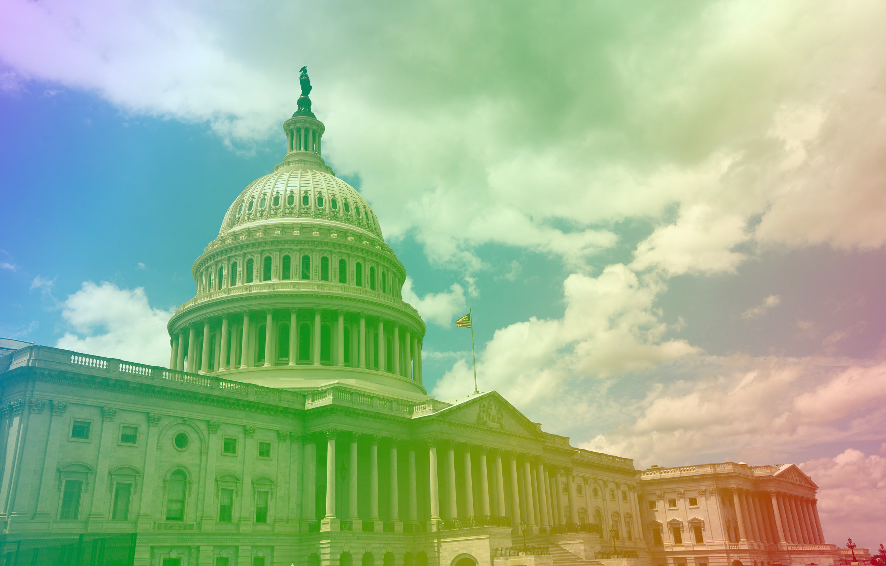

Congress Needs To Pass The Respect For Marriage Act
28 July 2022

The Respect for Marriage Act (HR. 8404) is a recently introduced bill in the United States that would protect same-sex marriage and has a real chance of passing. With same-sex marriage now at risk, congress must pass this bill.
The Respect for Marriage Act is multiple important provisions including:
1. Repealing the discriminatory Defense of Marriage Act, the Defense of Marriage Act (DOMA), passed in 1996, was a law that federally defined marriage as "between one man and one woman." The law was fortunately overturned by the Supreme Court in 2013 in the case United States v. Windsor. Unfortunately, with the Supreme Court being so conservative this case might be at risk, this bill would codify the case.
2. Protecting same-sex marriage, the Respect for Marriage Act would protect same-sex marriage by requiring states to recognize same-sex marriages that happened outside of the state. States would not have to recognize same-sex marriage themselves but leaving the state or even getting married on zoom would be trivial.
3. State governments and the federal governments would have to provide benefits to married same-sex couples enjoyed by everyone else.
The bill, which was introduced by several Democrats and Republican Susan Collins went on to quickly pass the House by gaining 47 Republican supporters in a 267 to 157 bipartisan vote. The bill now waits for a vote in Senate, it will need 10 Republican votes to overcome the filibuster. Luckily, the bill garnered support from 5 Republican Senators at the time of writing including Rob Portman, Susan Collins, Ron Johnson, Lisa Murkowski, and Thom Tillis. The bill has not faced a coordinated opposition from Republicans with many still saying they are unsure of their vote, this makes the possibility of gaining 10 Republican votes more likely.
Many lawmakers and strategists are optimistic that the bill can pass, for example, Senator Susan Collins said "I think we’re very close" when asked about the efforts to get 10 Republican votes.
Same-sex marriage has obtained lots of support from the American people, overall, 70% support it with 83% support from Democrats and 55% support from Republicans. The Respect for Marriage Act itself has also captured backing from corporations, over 170 companies signed a letter in support of the bill.
Here are some things you can do to support the Respect for Marriage Act:
1. Call your senators, especially if they say they're undecided about their vote.
2. Sending a convincing email to your senators calling on them to support the bill.
3. Donating to and supporting advocacy organizations working to pass the bill.
4. Telling your friends and family to support the Respect for Marriage Act.
Congress must pass the Respect for Marriage Act to defend the rights of LGBT+ Americans, while the bill faces challenges in the Senate it has a chance of passing. We need to work to make this as likely as possible.
https://www.congress.gov/bill/117th-congress/house-bill/8404
https://www.hrc.org/press-releases/human-rights-campaign-urges-federal-lawmakers-to-pass-bipartisan-respect-for-marriage-act
https://www.law.cornell.edu/wex/defense_of_marriage_act_(doma)
https://www.wispolitics.com/2022/u-s-sens-baldwin-feinstein-collins-introduce-bipartisan-respect-for-marriage-act/
https://edition.cnn.com/2022/07/20/politics/gop-senators-same-sex-marriage/index.html
https://minnesotareformer.com/2022/07/27/gop-support-for-same-sex-marriage-protections-builds-in-u-s-senate/
https://news.gallup.com/poll/350486/record-high-support-same-sex-marriage.aspx
https://www.hrc.org/press-releases/human-rights-campaign-mobilizes-more-than-170-businesses-over-20-000-supporters-in-support-of-respect-for-marriage-act-senate-vote